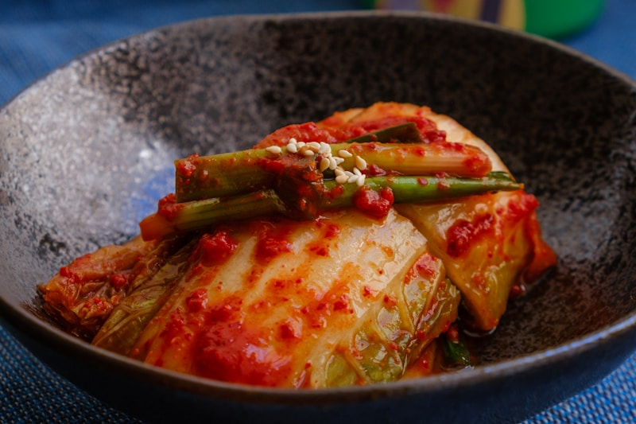

This recipe is curated from "Kimchi Recipe (Napa Cabbage Kimchi)" written by Sue, and found on https://mykoreankitchen.com/kimchi-recipe/

Image by wonderledger,CC https://wonderledger.tistory.com/entry/%EC%88%98-%EB%AF%B8%EB%84%A4-%EB%B0%98%EC%B0%AC%EC%9D%98-%EB%A7%A4%EB%A0%A5-%EA%B1%B4%EA%B0%95%ED%95%98%EA%B3%A0-%EB%A7%9B%EC%9E%88%EB%8A%94-%EC%A7%91%EB%B0%A5-%EC%95%84%EC%9D%B4%EB%94%94%EC%96%B4 ,
via Google Commons.
1.5 cups (285g / 10 ounces) Korean coarse sea salt or natural rock salt (for salt water)
1/2 cup (97g / 3.4 ounces) cooking salt, medium sized crystals (for sprinkle)
2 Tbsp glutinous rice flour (sweet rice flour)
1.5 cups (141g / 4.97 ounces) gochugaru (Korean chili flakes)
540g / 19 ounces Korean radish or daikon radish, julienned
1 Tbsp fine sea salt(cabbage)
3.5 Tbsp Korean fish sauce
2 Tbsp salted fermented shrimp (saeujeot), minced
90g / 3.2 ounces Korean chives, cut in 5 cm / 2 inch length
140g / 4.9 ounces carrots, julienned
1/4 cup (42g / 1.48 ounces) minced garlic
2 Tbsp raw sugar
75g / 2.6 ounces onion, blended (with a stick blender or vegetable chopper) or finely grated
Rate This Recipe
Conversion
=
Directions:
Cut the napa cabbage into quarters and rinse it in running water. Make sure the stem is intact.
Dissolve the coarse salt in the water (16 cups) in a large bowl. Dip the napa cabbage in the saltwater one at a time and transfer it onto a tray for further salting.
Pinch some cooking salt (1/2 cup total for all pickled cabbages) and rub over the thick white part of the cabbage.
Open each leaf gently and sprinkle the salt over the thick white part.
Repeat this for the rest of the cabbage. Reserve the saltwater from when you soaked the cabbage for later use.
Put the salted cabbage in a large food grade plastic bag or large bucket (wedge side of the cabbage to be facing up) and pour in the reserved saltwater from step 2.
Close the plastic bag. If using a bucket, get something heavy on top of the cabbage to press down (e.g heavy pot with water).Set the cabbage aside for 6 hours to pickle.
Rotate the cabbage upside down every 2 hours. Using a large food grade plastic bag will make the turning process much easier than using a large bucket.
Once the soaking process is finished, rinse the cabbages in running water, especially the thick white part of the cabbage, to get rid of the salt.
Place them in a colander and allow to drain for 1 hour.
While waiting, prepare the glutinous rice paste. Mix glutinous rice flour with the water (1.5 cups) in a saucepan and boil it over medium heat for 5-8 minutes, until it thickens.
Once ready, transfer the rice paste to the medium-size bowl and let it cool. Add Korean chili flakes once it has cooled. Then, combine them well.
Prepare a large mixing bowl and add radish, fine sea salt, Korean fish sauce, and salted fermented shrimp. Leave it for 10 minutes for the radish to salt down.
Add Korean chives, carrots, minced garlic, minced ginger, sugar, blended onion, and the Korean chili flakes mixture from step 5. Mix them well.
Now the kimchi seasoning / kimchi paste is made, ready for use.
Place a quarter of a cabbage on a tray. Spread the seasonings over each leaf. (You only need to season one side of the leaf.)
1 to 2 small fistfuls of seasoning is enough per quarter of cabbage.
Repeat this step for the rest of the cabbage. Dont pull the cabbage leaves off the stem, leave them attached so it holds together better.
Transfer the kimchi into a kimchi container or an airtight container (and put the lid on). Leave it out at room temperature for 24 hours, then move it to the refrigerator.
While you can start eating it once its chilled, you may want to wait 3-4 more days for it to develop more flavor.
Once the kimchi is ready to eat, chop a small portion and store it in a smaller glass container. This makes it more convenient to serve with your meal.
Keep the other batches intact in the large kimchi container. This way, you only cut it up as needed, which helps keep the remaining kimchi fresh longer.